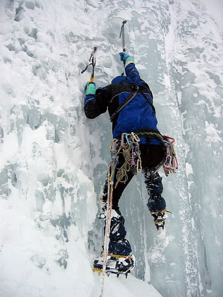

ice climbing is the activity of ascending inclined ice formations. Usually, ice climbing refers to roped and protected climbing of features such as icefalls, frozen waterfalls, and cliffs and rock slabs covered with ice refrozen from flows of water. For the purposes of climbing, ice can be broadly divided into two spheres, alpine ice and water ice. Alpine ice is found in a mountain environment, usually requires an approach to reach, and is often climbed in an attempt to summit a mountain.
Water ice is usually found on a cliff or other outcropping beneath water flows. Alpine ice is frozen precipitation whereas water ice is a frozen liquid flow of water. Most alpine ice is generally one component of a longer route and often less technical, having more in common with standard glacier travel, while water ice is selected largely for its technical challenge. Technical grade is, however, independent of ice type and both types of ice vary greatly in consistency according to weather conditions. Ice can be soft, hard, brittle or tough. Mixed climbing is ascent involving both ice climbing and rock climbing.
